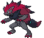

ohh, N. what is there to say? he's my childhood favorite, and one of the only reflections of myself i saw as a kid. i can't deny that he occupies the number one spot largely from nostalgic comfort... still, is there anyone who doesn't love him? well, he's pretty weird, so i understand if you don't. his eccentricities are precisely what have always drawn me to him, though. not only does he come off as blatantly autistic, but he also displays odd "powers" that other humans can't understand - something i've always appreciated about him as someone that people are easy to clock as "delusional". on top of all this, he also identifies more towards pokemon's version of "animality" than with the humans around him.
N was raised primarily by pokemon, and grew to be able to understand their unique way of speaking. He was "adopted" by his "father" Ghetsis, the first human he had ever met. Ghetsis proceeded to deliberately skew N's perception of the world, showing him Pokemon that have been harshly injured and scorned by humans. Ghetsis only let N view humanity and pokemon as being in opposition to eachother - a bond that could only ever create hurt. wanting to save his fellow pokemon friends from percieved danger, he unwittingly goes about bringing about Ghetsis's goal of separating trainers from their Pokemon.
all of this this goes beyond being a single character trait of N's - it shapes his entire worldview, and as consequence shapes the entire plot of the game. his story and struggle with the concepts of "truth" or "ideals", the reality he's forced to face or the reality he wishes for, are the core of black & white's entire story. as the second "hero", it's up to you to either confirm or negate his views. your battles with him take a much larger shape than just a simple pokemon battle. on top of everything, it's not treated as a joke, it's extremely important! even his power of understanding Pokemon's speech is never once treated as a negative trait by anyone outside of Ghetsis. it makes me emotional just thinking about it... as someone who's always shared similar views to him, and dealt with similar "family" troubles - he's special to me, and i'm thankful that he exists at all.
as a result of this, the relationship between N and the protagonist has always been important to me. you can probably tell from the quote, but i typically view the story with touya as the protagonist, though it doesn't make much of a difference in the end. the protagonist takes the form of another hero, not just for unova, but also for N - by showing him that his innocence had been taken advantage of, and the "truth" or "ideal" that he hadn't been able to see all along. i've always loved N's admiration for the protagonist and his wish for them to follow their own dreams, too, or create their own world in the same way they allowed him to. it would be so easy for him to lash out at them, or go into denial, but after accepting defeat - he chooses kindness.
i've personally always preferred for N to be the hero of truth than the hero of ideals. i love the idea of N fighting to prove his personal truth, prove that he hasn't been lied to, and prove that his childhood experiences and his "ideal" world are the truth to him. that's just me, though, and the concepts are intentionally vague enough that you could probably shift either reading to be about the same.

and in comes kieran with the steel chair! taking the second place spot where before last year gladion would probably be sitting. unfortunately being in second place would probably make him extremely neurotic if he were able to say anything about it, uhhh... sorry kieran. (not really.)
being the most recent addition to this list, i have both too much and too little to say about this character. i haven't actually played the dlc myself, so i have less nostalgic attachment to the region or game like i would with the other characters on this list. however, kieran is such a well written character that to me it feels like he's squirming and moving alive amidst the buggy, rough mess the rest of scarlet & violet can be at times. it's like he's almost begging to reach out of the world he's stuck in. his character comments on aspects of pokemon that i've wanted to see not just in this series itself, but in video games in general!
of course, this is probably just because i once again relate to him pretty heavily. i'm also a weird, shy kid who was raised by their grandparents in the middle of nowhere with an autistic obsession over weird stories that other people hate or misunderstand... i relate to him in worse ways too, but that's probably veering into oversharing. regardless, i appreciate his wallpuncher all-or-nothing personality. similar to N, kieran is considered "rivals" with you in order to fight against your position in the story and to prove his own ideals and his "worth". this gets interesting when he is essentially fighting against an unkillable god that is the RPG protagonist - you're the main character, you can't lose! kieran is fighting against that any chance that he gets, to no avail.
this pairs in a unique way with who kieran is as a character: he's a weird, extremely isolated and most of all lonely kid who seems to have not known much of anyone outside of his older sister and the ogre from the stories who he idolizes so much. so when he meets the protagonist in teal mask, it feels like he's finally found something interesting and special that he'd never seen before, something he had been wanting to see all along in ogerpon. he even notes this himself, and proceeds to put the protagonist on a massive pedestal...
|
Huh?! How'd that happen?! Aw man, even luck's on your side...
|
That turned out great. You're even good at taking photos...
|
|
Never thought I'd actually get to meet such an awesome Pokémon. No wonder you're so strong, Florian... You're...you're special.
|
See, my school...Blueberry Academy... It's a school that specializes in teachin' the art of Pokémon battlin'. If I was as strong as you...maybe I could aim to be the best Trainer there.
|
only for us to proceed to send him crashing down into a mental spiral by being forced into lying and going behind his back. instead of continuing to view the ogre as a hero he can befriend, he starts to view himself as the outcasted monster. it's only made worse when the pokemon he spent his entire life pining after chooses you over him, sealing the nail in the coffin. kieran reacts completely unlike N does in the face of being challenged: he kicks and screams the whole way down, and vows to take you all the way down to hell with him.
i don't think pokemon has ever truly tackled something like this before, and it really impresses me. like, is this really a pokemon game and not just reading out shit from my life? i don't think there's anything else i could say here that doesn't speak for itself. i love the progression of kieran's character arc, the fact that he tries and flails against what feels like a predefined fate for him, and that he tries again and again to prove his own ideas of what he deserves, for better or for worse. he wants badly to be just like you, but in the end, he's just kieran - and he has to learn to be okay with that. hasn't everyone felt that way before? (they have...right?)
kieran's existence singlehandedly convinced me to invest myself into scarlet and violet, games that had soured my view on pokemon as a series for a while, which was a very hard thing for me. he's brought love and pure autistic joy back into something important to me, and i'm extremely thankful that he exists how he does.
P.S. they made the world's first pokemon rival with bpd--
kieran has a similar taste in pokemon to me, it seems!
last but not least, gladion takes up the final place on this list for now. this character and this game came to me at a time where i was experiencing a brand-new feeling of freedom, and it was the first time since i was younger that i got to experience a new pokemon generation without something overtly traumatic clouding my vision of it at all. as a result, gladion really resonated with me. just like the rest of the characters here, i do relate to him a lot... for once we actually get a rival with mommy issues? wow! arven's taken the mantle since then, but it was really awesome to me as a teen. he's also the pokemon character i resembled the most visually at the time.
gladion is of course known for his edginess, but i appreciate his unabashed and loud presentation that he takes on after escaping from under his mother's abuse. as an older sibling in a similar situation, his relationship with lillie is also really important to me. it's always been really funny to me how he profusely apologizes to the protagonist for involving them in his family mess.
my one gripe is that i wish gladion got more room to grow within the story, instead of constantly being cast aside. although i love gladion conceptually, and all of the things that are there are great - i can see so much more potential for him... and of course, the changes that ultra sun and moon made to the story only serve to make the impact of his character even weaker, in my opinion. at least i like the little bit i've seen of him from the sun/moon anime.
his relationship with type: null is my absolute favorite part of his character - which is unsurprising, considering it's also my favorite pokemon. the fact he named silvally on his own is absolutely adorable, and says a lot about who he is deep down. to me, gladion feels like an evolution and improvement of everything that silver, another character i love, brought to the table. a friendship evolution is just another contributing factor to that. it's been a long time since i replayed sun & moon, so maybe i should get around to it and start that type: null hunt... hopefully then i'll be able to say more about gladion here. until then, i'm just grateful to be one of the few people that still remembers this guy exists.